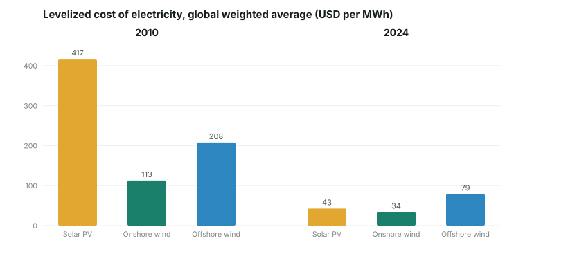
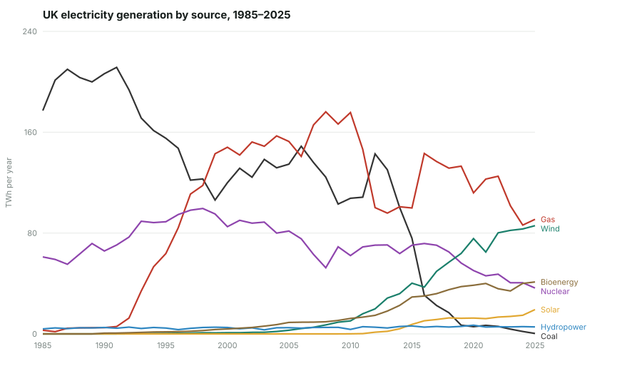
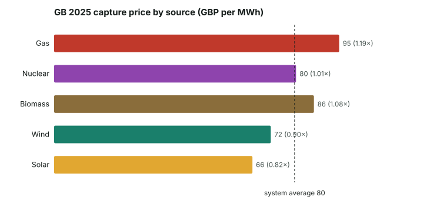
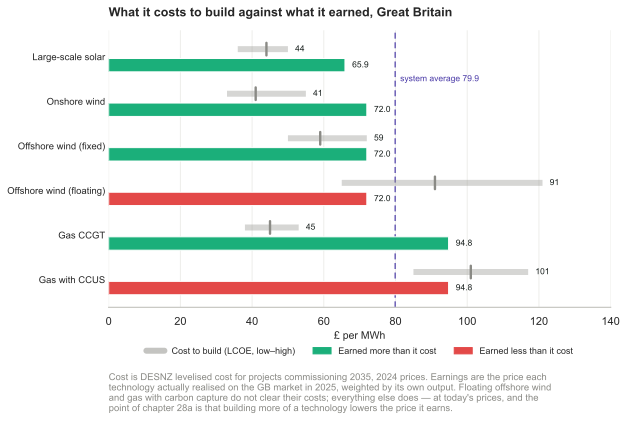

28a The value of renewable energy as it scales
Editor’s note: this chapter is new in the 2026 revision. It is not David MacKay’s writing. It extends his balance-sheet method into a question the 2008 book leaves largely open: what happens to the economic value of renewable electricity as it grows to the scale the balance sheet calls for. Written by Örjan Lundberg; every figure is sourced.
MacKay’s book answers one question with great care. Can sustainable sources physically supply as much energy as we consume? The balance sheet adds up kWh per person per day on each side and asks whether the green stack can match the red. By 2026 the answer, for electricity at least, is yes in many places. The physical potential is real, and the cost of building it has fallen a long way: solar modules cost about a twentieth of their 2008 price, utility-scale solar electricity about a tenth of its 2010 cost, and onshore wind and battery costs have fallen steeply too.1


The British grid MacKay described has already changed in one respect that matters for the rest of the book. In 2008 coal was the incumbent baseload at about 124 TWh; the last coal power station closed in September 2024, and by 2025 coal supplied essentially none of Britain’s electricity. Wind grew twelvefold over the same period, solar from nothing, and bioenergy fourfold, while gas and nuclear both fell.2 MacKay’s arithmetic is untouched, since it concerns physical potential and holds whatever the starting mix. What moves is the baseline of several later chapters: the five energy plans of Chapter 27, the nuclear question of Chapter 24 and the fossil-fuel discussion of Chapter 23 were written against a coal-heavy grid that no longer exists. Where a chapter’s argument leans on that baseline, this edition flags it.
A second question then takes over, and the 2008 book barely touches it, because in 2008 there was not yet enough weather-dependent generation for it to bite. The question is what a unit of renewable electricity is worth once a great deal of it has been built.
A wind turbine or a solar panel has no fuel cost, so it bids into the electricity market at close to zero and sets the price in every hour it runs. Add more panels and the price falls in exactly the sunny hours when they all produce at once, because their output is correlated. The revenue each panel earns per unit of energy therefore falls as more panels are built. This is not a market failure. It is the market working. The effect has a name, cannibalization, and a measure, the capture price: the average price a generator actually realises, weighted by its own output, rather than the flat average price.3
The gap is already large. In the German solar market the capture price has fallen as installed capacity has grown, and in a detailed study of the Swedish system a wind-dominated 2035 shows one thousand to fifteen hundred hours a year at a price of zero.4 Weather-dependent generators earn the lowest per-unit prices of any source, because they are all selling at once.
Britain shows the same pattern in measured data rather than in a model. Across 2025, GB wind captured about 90% of the average market price and solar about 82%, the only two sources below the average, while gas earned a premium of almost 20% by running in the scarce hours and nuclear sat at the average.5

This changes the useful question. MacKay asks how much we can build. Once it is built, the question becomes what absorbs the surplus, because whatever drains the cheap hours decides where the value lands. A study of the German energy system to 2045 makes the point sharply: a system short of flexibility does not deliver cheap power. It delivers a wider spread of prices, with both more zero-price hours and a higher average price, because the peak still has to be covered by plant that now earns its keep in fewer hours.6
The surplus does not reach demand on its own. Between the cheap hours and the demand that would use them stand two gates. The first is a price gate. A flat per-unit electricity tax puts a floor under what a buyer pays, so however deep the surplus goes the delivered cost stops falling, and the strongest signal a market can send, a negative price, never reaches the meter. Sweden and Finland run the cleanest natural experiment on this. With comparable district-heating hardware but opposite tax treatment, Finnish electric boilers supplied about 8% of district heat in 2025 while the larger Swedish fleet sat almost idle.7 The second gate is physical. A project can be economic on every hour of the year and still wait years for a grid connection, or be refused one.8
Storage, and the demand that arrives with the supply
There is a way to undo much of the cannibalization, and MacKay half-describes it already. If something consumes the surplus in the hours it appears, the trough is filled, the price recovers, and the capture price stops falling. Storage does this from the supply side. A pumped-hydro scheme like Dinorwig, which MacKay treats in Chapter 26, “Fluctuations and storage”, buys power when it is cheap and sells it when it is dear, which is the same as buying in the surplus hours and selling in the scarce ones. Heat storage does it from the demand side. A district-heating system with a hot-water store can run its electric boilers when power is cheap and coast on the store when it is not, which is why Finland’s boilers earn their keep while Sweden’s, taxed at a flat rate and with little storage behind them, sit idle.9
Storage does not escape the trap it is meant to cure. A battery earns from the spread between cheap and dear hours, and as more batteries are built they all charge in the same cheap hours and discharge in the same dear ones, narrowing the spread they live on. The revenue figures already show it: in California the arbitrage revenue a battery earns has fallen year after year, and the Australian market has reached record lows.10 A generator competes away its capture price and a battery competes away its spread; the effect is general, and it reaches every resource whose value comes from a price signal. No single store answers every duration, either: lithium-ion is the cheapest way to shift energy across a few hours and among the dearest to shift it across a hundred, so the merit order of storage inverts as the duration lengthens. Batteries cover the daily swing, and the seasonal balance needs another technology, or demand that can wait.11
This is why a purely merchant market under-builds the system as a whole, and why some planning guidance is needed. A wind farm, a battery and a flexible boiler each hold their value only if the others are there, yet none is paid to consider the others, and each meets the same falling return as it scales. What is missing is coordination: sizing storage and flexible demand against the generation being built, rather than hoping the market assembles the parts in the right proportion after each has separately learned that it cannot. In Donella Meadows’s ranking of where to intervene in a system, a tax rate or a queue rule is a weak lever near the bottom, and the goal the system is steered toward is a strong one near the top. A market told only to minimise the cost of each megawatt-hour will not build the storage and demand that make the megawatt-hours worth producing. It has to be given that goal.
Not every flexible consumer is equally worth building. Michael Liebreich’s hydrogen ladder ranks the uses of clean hydrogen from the unavoidable, fertiliser and refining and methanol, down to the uncompetitive, domestic heating and cars.12 The lesson carries over to flexible demand in general: the load worth pairing with intermittent supply is the one whose end product is genuinely valuable, not any load that can be switched on when the wind blows. Electrolysis is a good sponge for surplus power where it feeds a factory that needed the hydrogen anyway, and a poor one where it is a roundabout way to heat a house.
The corollary is economic rather than physical, and it is the sharper half of the point. Because the capture price falls as intermittent supply grows, each new tranche of wind or solar pays only if something is built alongside it to absorb the surplus and hold the price up. To keep adding intermittent producers you have to keep adding flexible consumers: storage, electrolysers, heat that can wait, cars that charge when the wind blows. The demand has to arrive with the supply. Where it does not, the realised price falls, and the build-out continues only because a support payment makes up the difference.
Policy is starting to force this into the open. On 29 July 2026 the German government agreed to phase out the fixed feed-in tariff for new small rooftop solar, so that new installations must sell directly on the market rather than at a guaranteed price. The economy minister, Katherina Reiche, framed it as ending the “produce and forget” principle, under which curtailment costs are borne by the public “regardless of whether the electricity is needed”.13 Stripped of the guaranteed price, a new panel is exposed to exactly the cannibalized market price described above, and its owner now has a reason to care whether the electricity is worth anything in the hour it is made.
Sweden had already done it, and said the same thing in plainer terms. On 17 September 2024 the finance ministry announced that the tax deduction for installing solar cells would fall from 20% to 15% from July 2025, and that the separate tax reduction for mikroproduktion av förnybar el — the credit a household earned for selling its surplus back to the grid — would be abolished outright from January 2026.14 The reasoning given was not that solar had failed but that it had worked: installations had “ökat kraftigt”, past 250 000 systems by the end of 2023, so the support was no longer needed and solar should stand på marknadsmässiga grunder, on market terms, with the electricity price left to guide where the next panel goes. Withdrawing the microproduction credit alone was reckoned to be worth 680 million kronor a year to the treasury.
Two governments of quite different politics, two years apart, reached the same conclusion by the same route: a payment that is indifferent to when the electricity arrives stops being a subsidy for clean energy and becomes a subsidy for ignoring the market. That is the argument of this chapter, arrived at from the fiscal side rather than the physical one.
It has a second effect, and this one supplies the missing half rather than merely exposing it. A household with panels faces two quite different prices. What it earns for exporting a surplus kilowatt-hour is roughly the spot price; what it saves by consuming that kilowatt-hour itself is the full retail price — spot plus energy tax plus network fee plus VAT. Self-consumption has always been worth several times export, and the microproduction credit existed to narrow that gap. Removing it widens the gap again, and the gap is precisely what a battery is paid to arbitrage: it turns exported kilowatt-hours into self-consumed ones. The same flat tax that, on the industrial side of this argument, floors the price and blunts the signal reaching an electric boiler, works the other way at a domestic meter, because avoided consumption avoids the tax too.
Sweden’s tax code now says this outright. Under the grön teknik deduction the rate for installing solar panels is 15%, while the rate for installing storage of self-produced electricity is 50%, as it is for an EV charge point, up to 50 000 kronor per person a year.15 Support has been shifted, by more than a factor of three, from adding intermittent supply to adding the things that absorb it. In practice that means batteries of the order of 10 to 20 kWh for a single house and perhaps 100 kWh for an apartment building, sized to move an evening peak rather than to ride out a still week — which is the right scale for the daily cycle that cannibalizes solar, and the wrong one for the seasonal problem that chapter 26 is about.
So the reform does more than expose the owner of a panel to the cannibalized price. It changes what the household is rewarded for building next, from another panel to the storage that makes the panel worth more. That is the mechanism this chapter has been asking for, working at the smallest scale in the system. Whether it also works at the scale of a smelter is the harder question, and there the answer still runs through the grid connection and the industrial tariff rather than through a household’s tax return.
What a twenty-year guarantee costs when the value falls
The German reform did not come from a change of heart. It came from a deadline. The European Commission’s state-aid approval for the EEG expires on 31 December 2026, so a compliant replacement has to be in force on 1 January 2027 or new plant cannot lawfully be supported at all.16 That is worth saying plainly, because it changes what the decision was. A country that had paid the subsidy for a quarter of a century did not stop because it concluded the subsidy was wrong. It stopped because the permission ran out and something had to be written in its place.
The status matters for how firmly any of this should be read: what follows is a ministry draft, sent to consultation on 20 July 2026 and agreed in cabinet on 29 July, now going through the parliamentary process, and the numbers may move. As drafted, what replaces the guarantee is modest. New systems get a transitional payment set below the old tariff and capped at 36 months. Separately, systems under 25 kW get a direct-marketing bonus of 1.5 cents per kilowatt-hour for their first four years in direct marketing — the two run for different periods, which is in the draft rather than a slip here. The obligation to sell directly reaches systems of 50 kW and above in 2027 and steps down year by year until, by 2030, it covers every new system except plug-in and mini-PV units of 2 kW or less.17
The reason the reform is contentious is the size of what is being wound down. The EEG has lately moved about €18 billion a year. In 2024 the EEG paid solar producers roughly €10 billion above what their output earned on the market — about twice the top-up wind received, while solar generated 75.9 TWh against wind’s 139.8, a little over half as much.18 The explanation is not that solar is inefficient but that the payments still being honoured are the guarantees written in the 2000s, when a rooftop system was awarded 40 to 57 cents a kilowatt-hour for twenty years. Averaged across the whole installed fleet, German solar still drew about 17.4 cents per kilowatt-hour in 2024, while a system commissioned that same year received 6.5 to 10.7.
Now set that against what the electricity was worth in the hours it was actually made. In April 2026, 123 of Germany’s 720 market hours cleared below zero, and 105 of them — 85% — fell between 10:00 and 16:00, which is the solar block. The mean price across those negative hours was −€36/MWh, and the deepest single hour reached −€413.8/MWh.19
That juxtaposition is this chapter’s argument standing in one place: a fixed payment of 17.4 cents against a market value that is not merely low but negative, in precisely the hours the asset produces. But it needs one qualification, and the qualification is the interesting part. The generator on a legacy guarantee does not pay anyone to take its output. The EEG account does, which is to say the public does — exactly the “produce and forget” arrangement Reiche described above, in which curtailment and negative-price costs are borne by the public “regardless of whether the electricity is needed”.
Germany has been closing that door for two decades, but from the top down by size and only forward by vintage. Large plants have lost their payment during runs of negative prices since the 2016 vintage, and the trigger has tightened from six consecutive hours to four, then three, and reaches one hour in 2027. The Solarspitzengesetz of 25 February 2025 went much further: it removed the size floor that had confined the rule to plants of several hundred kilowatts, so that a system as small as 2 kW now loses its payment in every single quarter-hour the day-ahead price is negative.20 What all of this shares is that it looks forward. The 40-to-57-cent contracts from the 2000s — the ones the €10 billion is mostly paying — sit below every size threshold ever set and predate every vintage band, and keep their money whatever the price does. Cannibalization at its limit does not show up as a low price. It shows up as a bill, and the question is only whose name is on it.
One argument to be careful with
The German debate about this is fierce, and one move in it is worth naming because a reader will meet it often. It is frequently observed that after twenty-six years of the EEG, Germany still takes about 80% of its primary energy from fossil fuels, “almost unchanged”. The actual figure for 2025 is 76.4%, with renewables at 20.6%. But the gap between 80 and 76.4 is not the problem with the claim. The problem is that it does not test what it appears to test, because the EEG is an electricity law and primary energy counts the petrol, diesel, heating oil and gas boilers it never addressed. On the quantity the law was actually aimed at, the renewable share of gross electricity consumption rose from 6.3% in 2000 to 55.1% in 2025.21
Both numbers are real, and only one of them is a measure of the policy. This is worth flagging in a book built on unit arithmetic, because it is the characteristic failure that MacKay wrote against: not a wrong number, but a right number answering a different question. The case against the cost does not need it. The case against the cost is the €10 billion, and it stands on its own.
Whose money, and whose bill
The €10 billion is where an old phrase becomes exact. Adam Smith observed in The Wealth of Nations (1776) that the directors of a joint-stock company, “being the managers rather of other people’s money than of their own”, cannot be expected to watch over it as carefully as they would their own. Margaret Thatcher’s line, usually paraphrased as the trouble with socialism being that you eventually run out of other people’s money, points at the same hazard from the other end. Intermittent capacity whose returns rest on subsidy rather than on the price it earns is financed, in both readings, with other people’s money, and that money is spent whether or not the energy arrives when it is wanted. The way out is the storage and the flexible demand that let the energy earn its own value, so the investment rests on the price it commands rather than on the payment that currently stands in for it.
There is a reading of all this that connects back to the reason MacKay wrote the book. Cheap energy, if it reaches industry, is what keeps energy-intensive industry alive, and that industry is a large part of what an economy runs on. The same surplus that starves a generator’s revenue is, read at the buyer’s meter, cheap input, but only if the gates let it through. Germany shows the loop run backward: after its gas price rose, energy-intensive output fell to about 82% of its 2021 level and stayed there.22
What it costs to build against what it earns
The capture price becomes a decision rather than an observation when it is set beside the cost of building the thing. That comparison is rarely drawn, because the two numbers come from different places: the cost from engineering studies, the earnings from settlement data.

Figure 28a.4. Cost to build against price realised, Great Britain. Cost is the Department for Energy Security and Net Zero’s levelised cost for projects commissioning in 2035, in 2024 prices, with the low-to-high capex range shown. Earnings are the price each technology actually realised on the GB market in 2025, weighted by its own output.23
| £/MWh | Cost to build | Earned in 2025 |
|---|---|---|
| Large-scale solar | 44 | 65.9 |
| Onshore wind | 41 | 72.0 |
| Offshore wind, fixed | 59 | 72.0 |
| Offshore wind, floating | 91 | 72.0 |
| Gas CCGT | 45 | 94.8 |
| Gas with carbon capture | 101 | 94.8 |
Four of the six clear their costs on today’s prices. Floating offshore wind does not — 91 against 72 — which is the quantified version of the proviso chapter 10 records MacKay repeating from wind experts in 2008, that deep offshore is prohibitively expensive. Eighteen years later it is still about a quarter short. Gas with carbon capture does not either, at 101 against 94.8, which is chapter 23’s finding in one line: capture works and has not been built, for reasons of cost rather than physics.
Before reading anything into those margins, one asymmetry in the chart has to be admitted. The two columns are not measured on the same boundary. The right-hand column is a system quantity: a capture price is what the market actually paid, in the hours the plant actually produced, with everything the system was doing at the time already in it. The left-hand column is an asset quantity: DESNZ’s levelised cost counts capital, fuel and operations inside the fence, and excludes the balancing capacity a variable source needs, the curtailment it suffers, and the capacity utilisation it takes away from the dispatchable plant that must stay available for it.
That asymmetry has a direction. It leaves the cost of a variable source understated relative to a dispatchable one, so the margins in the table are too generous to solar and wind and too harsh on gas — by an amount nobody in this chart has measured. Chapter M sets out the methodological case and one attempt to quantify it: a Norwegian onshore wind farm costed on a system boundary came out 19% above its asset figure, 34% once uncertainties were carried through, and up to 3.5 times if the capacity model was left at nameplate. Those numbers come from a single case with a strong assumption — it firms one wind farm to a dispatchable standard using dedicated gas, which no system operator actually does — so they are an upper bound rather than a correction to apply. The direction, however, is not in doubt.
Which means the honest reading of the chart is not “four of six clear their costs by these margins” but “four of six clear their costs, and the variable ones by less than shown.” The £13/MWh that fixed offshore wind clears by is the number most exposed to this, and it is the number the rest of this section leans on.
And the chart is a snapshot of a moving thing, which is this chapter’s whole point. The right-hand column is what the existing fleet earned. Build more of a technology and its capture price falls, because the new plant produces in the same hours as the old. So a project appraised against today’s £72 will not receive £72 once it and its neighbours are running: wind’s value factor of 0.90 has further to fall.
Read that way the figure states the investment problem exactly. Fixed offshore wind clears its cost by about £13/MWh, and its own expansion is what closes that gap. The CfD exists to bridge it, which is why chapter 4’s note on AR6 matters: a strike price of about £82 in today’s money against a captured £72 is the public purse paying the difference between what the market gives and what the machine costs.
And it explains why the strike price and the levelised cost do not match. AR6 cleared at roughly £82/MWh indexed while the levelised cost here is £59. A bid below the published cost of building is not a contradiction; it is what happens when a contract removes the price risk, because the discount rate a project is financed at falls when its revenue is guaranteed. The CfD’s real product is cheap capital rather than a high price. That is the same insight as chapter 28a’s opening, arriving from the financing side: what a generator is paid for is not only energy but certainty.
Britain’s version of the problem is not a shock but a standing condition, and it is worse than the German one. Of the 28 IEA countries that reported industrial electricity prices for 2024, the United Kingdom’s were the highest, counting taxes and levies. Large British industrial users paid about 25.3p per kWh, some 125% above the EU-14 median of 11.3p.24 For a book whose argument is that Britain should electrify — heat, transport, industry — that is the most awkward number in the entire subject, and MacKay’s method cannot see it, because it is not a fact about joules.
Set it beside the wholesale figure from earlier in this chapter and the shape of the problem becomes clear. The GB market price averaged £79.9/MWh in 2025, which is 8.0p per kWh. Large industrial users pay roughly three times that. The difference — some 17p per kWh — is network charges, policy levies, supplier margin and the cost of firming, and almost none of it is the cost of generating the electricity.
That is the reconciliation this chapter has been circling. The complaint of the generator, that wind captures only 90% of a falling average, and the complaint of the smelter, that power costs three times what the market says it does, sound like opposite grievances. They are the same wedge measured from its two ends. Cheap generation and expensive delivered power are not in contradiction; the surplus is real, and it is being consumed somewhere between the turbine and the meter. A country can cannibalise its generators and impoverish its industrial consumers at the same time, and Britain currently does both.
So the argument of this chapter has a corollary it would be dishonest to leave out. Storage and flexible demand let renewable energy earn its own value, which is the answer to the first complaint. They do nothing whatever about the second. If 17p of a 25p industrial price is network, levy and margin, then no amount of cheap wind reaches the factory until that wedge is addressed, and it is addressed by policy rather than by physics or by batteries.
The same comparison, for a country that imports its fuel
The table above is a British question, and it takes a particular form because Britain has a liquid wholesale market: the thing a generator is measured against is the price other generators were paid. For most of Asia the comparison is a different one, and it is much less forgiving of fossil fuel.
An importer is not choosing between two ways of earning £/MWh in an auction. It is choosing between building a machine once, in its own currency, and buying fuel every year, for ever, in someone else’s — through a strait that chapter N describes being closed in March 2026. Asia has 54% of the world’s population and 2% of its oil reserves, imports about $1.1 trillion of fossil fuel a year at over 3% of regional GDP, and has solar and wind resources sufficient for at least fourteen times its total energy demand. Set beside those numbers, the levelised cost of solar is not competing with a capture price. It is competing with an import bill and a currency risk.
That is why the bet is being placed, and the exceptions are what confirm it. The countries paying most — Thailand at around 7.5% of GDP, then Taiwan, South Korea, Singapore, Viet Nam, Pakistan, the Philippines — have the most to gain from displacing the bill. The countries sitting near zero on the same measure are Malaysia and Myanmar, and they are near zero because they export. An exporter’s arithmetic runs the other way: every kilowatt-hour of domestic solar displaces a barrel it would rather have sold. Russia is the limiting case of that position, and it is not electrifying anything in a hurry.
The caution is that this cuts both ways as an explanation. Import dependence explains the urgency, not the whole of the behaviour — Malaysia and Brunei are both exporters and both ahead of the United States on electrification, because the share of final energy delivered as electricity is driven by what a country builds and sells as much as by what it must buy. And the fourteen-times resource figure is a technical potential, the same class of number as MacKay’s own green stack in chapter 18, which he was careful to say was not a forecast. What the trade balance predicts is which countries have a reason to hurry, and on that it predicts well.25
None of this argues against building renewables. MacKay’s arithmetic still holds, and the build-out has largely happened. It argues that the balance sheet needs a second page. The first page asks whether we can produce enough clean energy. The second asks who bears the cost of turning an intermittent surplus into firm, useful supply, and whether policy lets the cheap hours reach the demand that would value them. A fuller treatment, with the feedback loops drawn out and the Swedish and European data behind each figure, is at oluies.github.io/elmix.26
Regenerated by this edition’s data-refresh script (
Refresh.scala, DuckDB) from Our World in Data. Solar module cost fell from USD 4.61/W (2008) to 0.26/W (2024). Global weighted-average LCOE (IRENA), USD/MWh, 2010 to 2024: solar PV 417 to 43, onshore wind 113 to 34, offshore wind 208 to 79. Battery pack price, cited separately (BloombergNEF): about USD 1200/kWh (2010) to 115/kWh (2024).↩︎Figure regenerated from Our World in Data (Ember and the Energy Institute) by this edition’s data-refresh script (
Refresh.scala, DuckDB), in TWh: UK coal 124 (2008) to 0 (2025), wind 7 to 86, solar 0 to 19, bioenergy 10 to 41, gas 176 to 91, nuclear 52 to 36.↩︎Capture price = the sum of (production times spot price) divided by the sum of production. Source list at https://oluies.github.io/elmix/modell/referenser.html .↩︎
Goransson, Johnsson and others, “Tre elsystem som kan mota omstallningen av industri- och transportsektorerna”, Chalmers / Mistra Electrification, 2025.↩︎
Computed by this edition’s data-refresh script (
Refresh.scala, DuckDB) from Elexon BMRS: half-hourly GB generation by fuel type and the market-index price (APXMIDP), 2025. Capture price = sum(generation × price) / sum(generation); value factor against the 79.9 GBP/MWh time-weighted average. Gas 1.19, Biomass 1.08, Nuclear 1.01, Wind 0.90, Solar 0.82.↩︎Geis, Lindner and Brown, “Managing the mismatch: The role of flexibility on the path to a carbon-neutral energy system”, Advances in Applied Energy 23 (2026) 100284.↩︎
Energiateollisuus district-heating statistics, 2025; Fernqvist, Broberg, Toren and Svensson, “District heating as a flexibility service”, Energy Policy 172 (2023) 113332.↩︎
Energimarknadsinspektionen finding of 11 June 2026 on connection times; the Power2Earth refusal at Lulea, autumn 2025.↩︎
MacKay, Chapter 26, “Fluctuations and storage”. Finnish and Swedish figures and the role of thermal storage: Energiateollisuus 2025; Fernqvist and others, Energy Policy 172 (2023) 113332; the Arlanda aquifer store, Swedavia.↩︎
California battery arbitrage revenue: CAISO Department of Market Monitoring, and Modo Energy’s series of about 103, 80, 51 and 38 USD per kW-year. Australian NEM battery revenues at a record low: Modo Energy, 2026.↩︎
The storage merit order by duration: installed cost per kWh at a four-hour duty against a hundred-hour duty, where the spread widens to roughly a factor of 22 and lithium-ion falls from second-cheapest to dearest. https://oluies.github.io/elmix/lagring.html .↩︎
Michael Liebreich, “Clean Hydrogen Ladder Version 5.0”, 19 October 2023, https://liebreich.com/hydrogen-ladder-version-5-0/ .↩︎
“Government agrees to phase out Germany’s landmark fixed feed-in tariffs for new small solar PV”, Clean Energy Wire, 29 July 2026.↩︎
“Förändrade skattesubventioner för solceller”, Finansdepartementet, 17 September 2024: https://www.regeringen.se/pressmeddelanden/2024/09/forandrade-skattesubventioner-for-solceller/. The changes were part of an agreement between the government and Sverigedemokraterna; the rate cut was estimated at 100 million kronor in 2025 and 200 million a year from 2026, the abolition of the microproduction credit at 680 million a year from 2026.↩︎
Rates for the skattereduktion för grön teknik, Energimyndigheten’s Solelportalen: https://www.energimyndigheten.se/effektiv-energianvandning/guider/solelportalen/vilka-stod-och-intakter-kan-jag-fa/skattereduktion-for-gron-teknik/. As of 2026: 15% for solar panels, 50% for storage of self-produced electricity, 50% for an EV charging point, capped at 50 000 kronor per person per year. The battery sizes quoted are typical installed capacities rather than a recommendation.↩︎
The EEG’s approval under EU state-aid law runs only to 31 December 2026, so an EU-compliant successor regime must take effect on 1 January 2027; without one, new plant could be built and connected but not supported. Industry bodies including the BDEW and the BEE have pressed for a rapid parliamentary conclusion precisely so that the Commission has time to review and approve the replacement. Note that it is the state-aid approval that expires, not the statute itself.↩︎
Draft EEG reform sent to consultation by the federal economics ministry under Katherina Reiche in July 2026: guaranteed feed-in ends for new rooftop systems, replaced by a transitional payment set below the previous tariff and capped at 36 months, plus a direct-marketing bonus of 1.5 ct/kWh for the first four years for systems under 25 kW. Direct marketing becomes mandatory for systems of 50 kW and above from 2027, extending to smaller classes each year until it covers all new systems except plug-in and mini-PV units of 2 kW or less by 2030. Summary at https://www.pv-magazine.de/2026/07/20/reiche-schickt-entwuerfe-fuer-eeg-und-netzpaket-in-die-verbaendeanhoerung/. The industry association rejected the transitional terms as a “wertloses Trostpflaster” — a worthless sticking plaster — arguing they cannot replace the roughly 7 ct/kWh paid to partial feed-in systems and 10 to 12 ct to full feed-in systems. Those are the association’s own characterisation of the rates the reform removes, spanning the vintages currently in payment, and are not directly comparable with the 6.47 and 10.68 ct/kWh applying to systems commissioned in 2024 quoted in the previous note; EEG tariffs degress downward, so a figure above the 2024 rate refers to earlier commissioning years. Figures here are from a draft in consultation and may change in the parliamentary process.↩︎
The primary source is the Bundesnetzagentur’s Monitoringbericht, which has not been consulted directly here. The EEG flow of about €18 billion a year, the €10 billion paid to solar producers in 2024 against roughly half that for wind, and the fleet-average 17.4 ct/kWh are as reported from that monitoring report by Daniel Wetzel, “Die Ökostrom-Lobby hängt an den Subventionen wie ein Junkie an der Nadel”, Welt, August 2026. That piece is a signed opinion column arguing a position, in vigorous language, and is used here for its checkable figures rather than its framing; the generation comparison and the per-kilowatt-hour inference are made here from the Energy Institute’s Statistical Review of World Energy 2026, which gives German solar 75.9 TWh and wind 139.8 TWh in 2024. Rates for systems commissioned in 2024 (6.47 ct/kWh and 10.68 ct/kWh by segment) are the Bundesnetzagentur’s published tariffs. The €10 billion and the 17.4 ct figures are on different bases — net EEG payment above market revenue, and gross remuneration rate — so they should not be divided into one another; gross receipts on 75.9 TWh at 17.4 ct would be about €13 billion, not €10 billion.↩︎
April 2026: 123 of 720 hours cleared below zero on the German day-ahead market, 105 of them (85%) between 10:00 and 16:00 CEST; mean clearing price across the negative hours −€36.0/MWh; deepest single hour −€413.8/MWh. German negative-price hours in the first half of 2026 have been reported at 299 against 389 in the same period of 2025 — down year on year, not a trend within 2026. Note that these German figures run opposite to the Europe-wide count, which roughly doubled in the first quarter of 2026: the two are different geographies and should not be read as one series. See https://www.euronews.com/2026/07/29/wind-and-solar-overtake-fossil-fuels-in-germany-but-negative-electricity-prices-still-rife for the German half-year figures and https://www.pv-magazine.com/2026/05/08/europes-negative-electricity-price-hours-double-in-q1-amid-renewables-surpluses-market-imbalances/ for the European Q1 count. The April 2026 hourly detail predates both and should be checked against the exchange’s own published data before being relied on.↩︎
Under § 51 EEG the payment lapses when the day-ahead price is negative for a run of consecutive hours, with both the run length and the size floor depending on when the plant was commissioned. Plants of 500 kW and above commissioned from 2016 under the EEG 2014/2017 faced a six-hour trigger with no compensation. Under the EEG 2023, for plants of 400 kW and above, the threshold is four hours for the 2023 vintage, three for 2024 and 2025, two for 2026 and one from 2027. The Gesetz zur Änderung des EEG 2023 known as the Solarspitzengesetz, in force 25 February 2025, replaces the run with the first negative quarter-hour and removes the size floor: systems of 100 kWp and above immediately, and all systems from 2 kWp once a smart meter is fitted. Compensation for lost hours runs under § 51a, which extends the remuneration period — but it does not reach the oldest cohorts, and the 2025 reform replaced the flat hour-for-hour extension with a time-contingent model weighting photovoltaic losses at 0.5 times the negative quarter-hours actually incurred. Installations on the original 2000s guarantees are below every size floor these rules have used and are not reached by any of them.↩︎
The renewable share of German gross electricity consumption rose from 6.3% in 2000 to 55.1% in 2025; renewables reached 23.8% of gross final energy consumption in 2025. For primary energy, AG Energiebilanzen’s estimate for 2025 puts the fossil share of primary energy at 76.4% and renewables at 20.6%; the largest components are mineral oil at 35.7% and natural gas at 26.9%, with hard coal and lignite making up the remainder. The 76.4% is AGEB’s published total and is not re-derived here from the rounded components. Sources: Umweltbundesamt, “Renewable energies in figures”, for the electricity shares; AG Energiebilanzen’s 2025 annual estimate for the primary-energy shares. The distinction matters because primary energy includes transport fuels and heating fuels that the EEG does not address.↩︎
Destatis, production index for energy-intensive branches, 2025.↩︎
Levelised costs are from Electricity Generation Costs 2025, Department for Energy Security and Net Zero: central capex estimates for projects commissioning in 2035, in 2024 real prices — large-scale solar 44 (range 36–50), onshore wind 41 (33–55), fixed offshore wind 59 (50–72), floating offshore wind 91 (65–121), gas CCGT 45 (38–53) and gas with CCUS 101 (85–117), the two gas figures at a 30% load factor. Capture prices are for 2025 from this edition’s data-refresh script over Elexon settlement data. Three cautions. The two sides are not on the same footing: a 2035 commissioning cost in 2024 money against prices realised in 2025 by plant already built, so this is an order-of-magnitude comparison rather than an appraisal. The capture figure for wind combines onshore and offshore, so fixed offshore is measured against a blended price. And DESNZ notes that levelised cost omits system effects entirely — transmission, balancing and the value of being dispatchable — which is precisely what separates the gas column from the wind column and is the subject of this chapter.↩︎
Department for Energy Security and Net Zero, Quarterly Energy Prices, international industrial electricity price comparisons: of 28 IEA countries reporting for 2024, the UK had the highest industrial electricity prices including taxes and levies, with large users at about 25.33p/kWh against an EU-14 median of 11.25p/kWh. The 2024 price is compared here with the 2025 GB wholesale average, so the ratio is indicative rather than exact; and some energy-intensive users receive partial exemption from policy levies, so the figure for an individual plant may be lower. Sweden makes an instructive contrast: qualifying manufacturers there pay an electricity tax of 0.6 öre/kWh against a full rate of 43.9, a relief now under audit by Riksrevisionen.↩︎
Ember, Electric Asia: How Asia is leading the electric age, 11 June 2026. The figures, and the cautions that go with them — that Ember advocates for electrification, that its “Asia” excludes Russia, that the “share of Asia” percentages have an unstated denominator, and that the resource multiple is a technical potential rather than a forecast — are set out in full in the corresponding note to chapter N.↩︎
The elmix cannibalization model, https://oluies.github.io/elmix/modell/system.html .↩︎